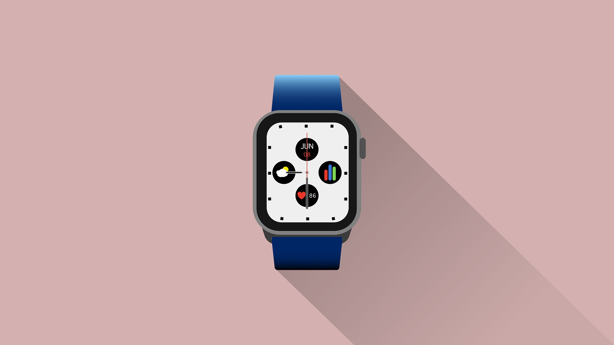
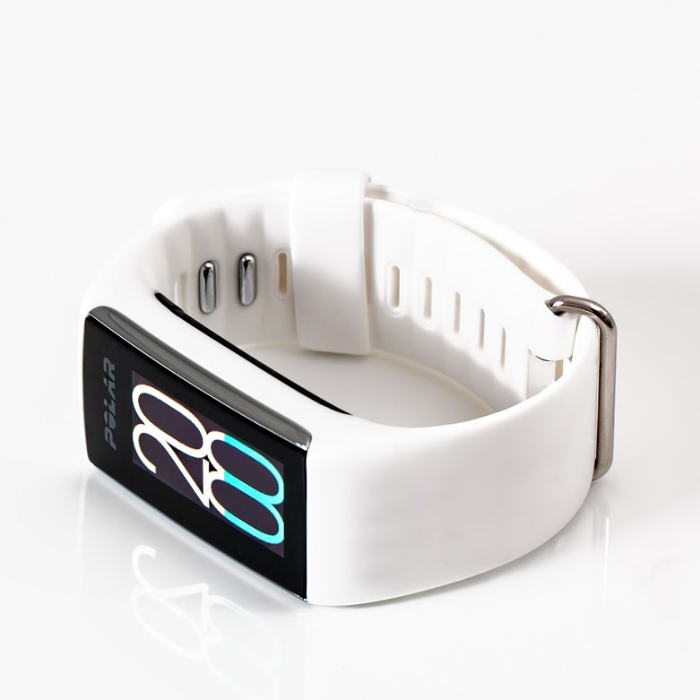
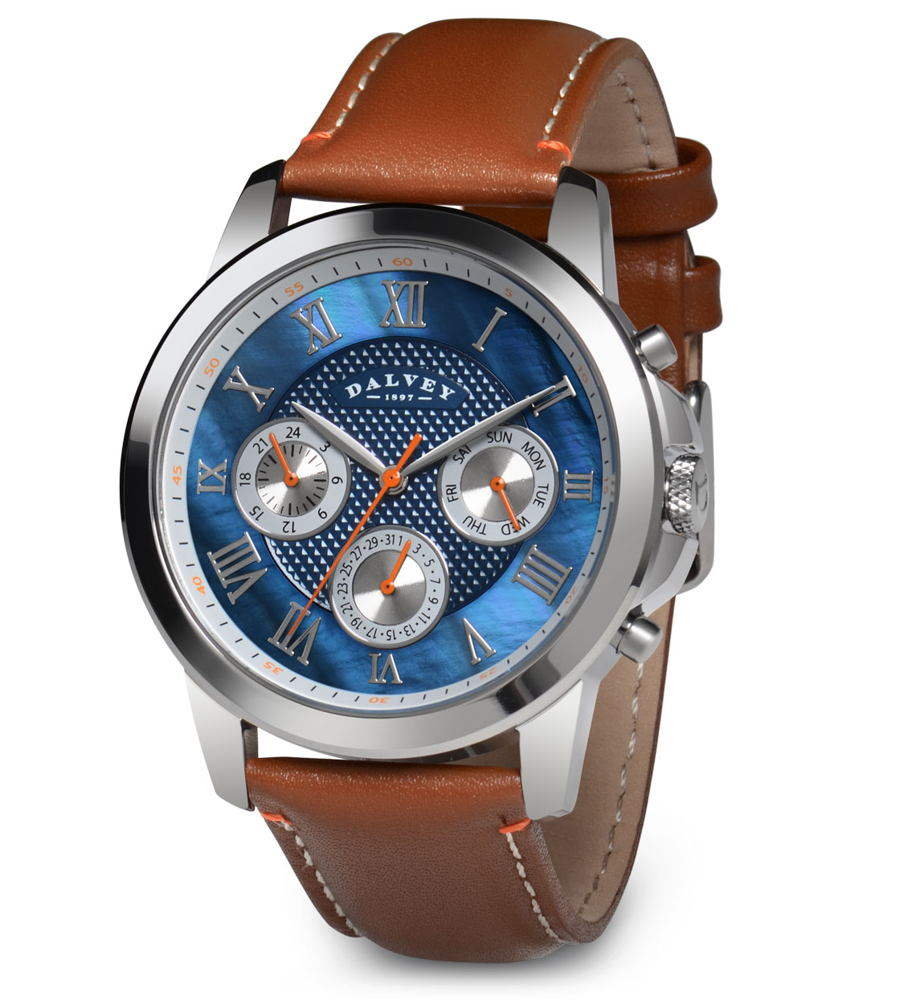

Smartwatch

The smartwatch is the standared one to go for as it has all functionalities. When you flip your wrist the ui screen pops up and shows you latest notifications, weather, music playing etc...
And you will not have to worry about the watch dying on you after a couple of hours since overtime batteries have improved so some watches could last over
2 days without charge
They come in differnt shapes specifically circle or square both have their benefits but you choose one that fits your liking.
These smartwatches can be very expensive due to their simlarities to smartphone and the benefits you get with it. Big companies like apple focus on this side of the smartwatch market.
But you can always go for a cheap one.
Fitness Smartwatch

Fitbit is a smartwatch in the market that focus on your physical health. Some watches have features like heartrate, steps, burn calories but fitbit is different from the rest
it can track when you are on a run, keeps track of your workout routine, reminds you to hydrate during workout so you can keep up and many more.
What also makes fitbit a reliable smartwatch to work out with is the shape of it, with traditional smartwatches they can prevent your wrist from moving freely during a workout and may cause damage to it, but not with
fitbit since its small size allows for your wrist to move freely. Sometimes you even forget its on you.
Hybrid Smartwatch
This smartwatches look a lot like standared watches its has its crown and analog clock on it telling you time no screen whatsoever. The differnce between this smartwatch compared to normal watches is that it can connect to your phone via bluetooth. In case you are bad at checking notifications or bad at knowing when someones is calling you the watch will vibrate when any of these actions are happening. This suits people who are not the biggest fans of the whole ui screen on your wrist and just want a watch that looks clean and can still help you throughtout your day besides just telling you the time.